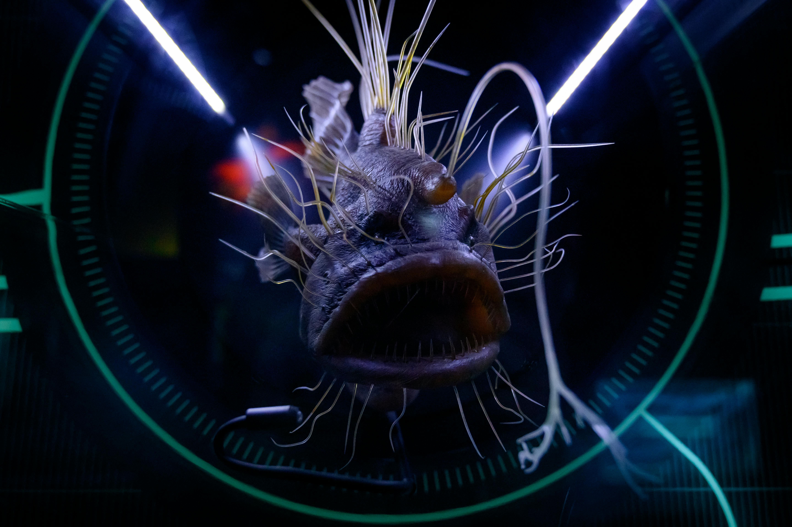

The ocean is full of mysteries, having humans only exploring 0.001% of the sea. Each zone has a different light level, temperature, community, pressure, and species of animals. The deep sea covered in complete darkness, demonstrates how much of a dark world the counterpart of land is. So hold on tight, while we explore the few known truths of this huge mystery!
One of the more well-known deep sea creatures, they’re known for the bioluminescent light they have hanging off their heads. They use this as bait to lure their prey consisting of small fish and crustaceans. Their “baits” come in different sizes and shapes: some being more featherlike and some being more large and round. They can be found worldwide and can grow up to four feet!
This beautifully pale and luminescent octopus can be found in the deep sea. Pearl octopus moms gather by warm underwater springs to raise their young. The heat helps their eggs hatch faster, and these “Octopus Gardens” are the largest octopus nurseries ever found! A mother will guard her eggs for nearly two years without eating, giving her life so her babies can survive. The way the moms curl around their eggs also resemble the look of pearls!
Living in the vast midwater with nowhere to hide, this sneaky jelly relies on speed and tricks to survive. When threatened, it flashes bright blue light to startle predators, then rockets forward with powerful jet propulsion, covering more than five body lengths in a single burst. To confuse attackers, it can even drop its sticky tentacles, which later grow back. With its dazzling light shows and quick getaways, the silky jelly proves that life in the deep is full of clever survival strategies.
The vampire squid looks like a creature from the deep sea’s nightmares with glowing blue eyes, a web, and the ability to flip inside out when threatened. Although this is a scary sounding (and looking) creature in truth, this soft-bodied squid is no predator. It feeds off of a mix of dead plankton, poop, and other organic bits (otherwise known as marine snow) and is only about the size of a football.
Glass squids are masters of invisibility in the dim twilight zone of the ocean. With see-through bodies, light-matching photophores, and a buoyant cavity filled with ammonium, they float silently while hiding from predators. Even their eyes can disappear! When danger strikes, they can darken their skin or release a ghostly cloud of ink before jetting away. Some glass squids are tiny, just a few inches long.
Deep-sea catsharks are nighttime hunters with eyes like a cat’s, featuring a mirrored layer called the tapetum lucidum to see in the dark. They also have a sixth sense: tiny gel-filled pits on their snouts detect the faint electrical signals of prey. Most catsharks are small, around 80 cm long, and lay keratin-covered egg cases that dangle in currents, which sometimes form chandelier looking eggs on canyon walls.